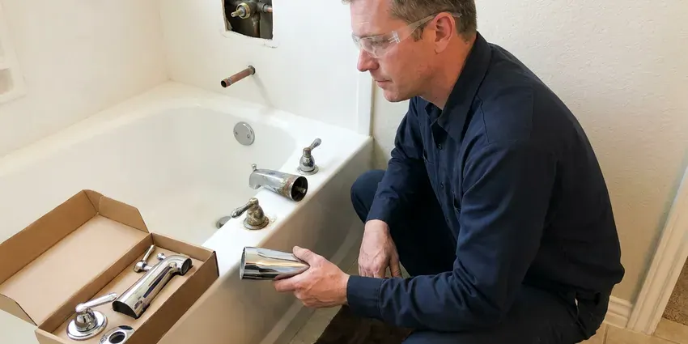

Toilet Installation in Tiverton, RI
Bought the toilet already? JPN Plumbing will set it in your Tiverton, RI home and bring the seal, bolts and supply line.
- Next-Day Installs Available
- Flat Labor Pricing
- Rough-In Checked First
- New Flange When Needed

Toilet Installs for Remodels and New Baths in Tiverton, RI
A licensed plumber can usually be there within a day or two.
Rough-In, Flange and Seal: Toilet Installation in Tiverton, RI
At JPN Plumbing we ask two things before you buy a toilet: the rough-in distance and whether you want a round or elongated bowl. Most homes have a 12 inch rough-in. Older houses and some condos use 10 or 14 inch spacing, and a toilet bought for the wrong one either will not fit or sits a couple of inches off the wall. We measure from the finished wall, not the baseboard.
Work we handle every week:
- Rough-in measuring for new floors and new baths
- New wax or foam seal on every install
- WaterSense 1.28 gpf and dual-flush upgrades

Additional Bathroom Plumbing Services in Tiverton, RI
From toilets to showers, our bathroom plumbing team in Tiverton, RI repairs, installs, and replaces every fixture with clean, code-compliant work.


Customers
Why Choose JPN Plumbing for Toilet Installation in Tiverton, RI?
Installing a toilet looks simple until the bolts are overtightened and the porcelain cracks. Closet bolts get snugged by hand plus a quarter turn, no more. China does not flex. Crank on it like a pipe fitting and the base splits, sometimes slowly enough that the leak shows up weeks later.
- Water Efficiency, A 1.28 gallon toilet uses under half the water of an old 3.5 gallon model.
- Local Expertise, We know the homes around Tiverton, from slab foundations to older cast iron drains.
- Durability, Stainless bolts and braided supply lines last far longer than plated steel and vinyl.
Citywide Coverage
Across Tiverton, our dispatch can usually put a plumber at your door within a day. Same-day slots open up most mornings. Tell us the toilet model when you call, and we will check whether the rough-in and supply connection match before the truck leaves the shop.
Experienced Team
The JPN Plumbing team is licensed in Rhode Island and trained on one-piece, two-piece, wall-hung and pressure-assisted toilets. They all set a bit differently. One-piece toilets are heavy and awkward, often 90 pounds or more, so we set them with two people to keep from rolling the wax seal on the way down.
Safety-First Approach
Bidet seats and smart toilets bring electricity close to water. We check for GFCI protection first. If there is no outlet within reach, we do not run an extension cord across the floor; we bring in a licensed electrician to add one.
Trusted Certified Tiverton Plumbing Services Professionals
At JPN Plumbing, we are proud to offer certified plumbing services throughout Tiverton, RI. Those papers on the wall mean something. Every repair, install and maintenance visit follows strict safety and quality rules, and the plumbers doing the work carry recognized industry credentials.
Call Us Now PHCC Plumbing Contractor Recognition
PHCC Plumbing Contractor Recognition Better Business Bureau (BBB) Accreditation
Better Business Bureau (BBB) Accreditation Angi Certified Pro
Angi Certified Pro ISO 9001 Quality Management Certification
ISO 9001 Quality Management CertificationToilet Installation Work We Handle in Tiverton, RI
Low-Flow WaterSense Toilet Installation in Tiverton, RI
WaterSense toilets are capped at 1.28 gallons per flush, and some dual-flush models drop to around 0.8 for liquid waste. That adds up fast. A family of four swapping one old 3.5 gallon toilet can save thousands of gallons a year, and some water providers offer rebates worth checking. Pick a strong MaP rating.

Commercial Toilet Installation in Tiverton, RI
Commercial restrooms take a beating, so we install vitreous china bowls with flushometer valves rather than tank toilets. A flushometer needs a 1 inch supply and steady pressure. Before setting fixtures in an office or shop, we check that the building supply can deliver the flow the valve is rated for, often 20 to 25 gallons per minute at the fixture. Fixture counts follow code.
Comfort Height Toilet Installation in Tiverton, RI
Comfort height bowls stand about two inches taller than standard ones. Consider who uses the bathroom first. Kids and shorter adults may not like their feet off the floor, but people with sore knees or a new hip usually love the extra height. Installation is the same as a standard bowl.
Commercial Restroom Toilets in Tiverton, RI
Restaurants and offices get heavy-duty fixtures and accessible stalls built to code. Downtime costs a business money. We schedule commercial installs early in the morning or after hours, and we stage the fixtures and valves on site so each stall is down for as short a time as possible. We work with your GC on inspections.
Wall-Mounted Toilet Installation in Tiverton
Wall-mounted toilets hang off a steel carrier bolted to the floor inside the wall. The tank sits behind an access plate. The carrier holds the whole load, so its feet get anchored to slab or framing and it gets plumbed before any wall finish goes on. Plan on a remodel, not a swap.
Urgent Toilet Replacement in Tiverton
A cracked tank or a bowl leaking at the base cannot wait for next week, especially in a house with one bathroom. We keep common two-piece toilets on the truck. Often the broken unit comes out and a 12 inch rough-in replacement goes in during the same trip, round or elongated. Close the stop until then.
Toilet Brands We Install in Tiverton
We install Kohler, TOTO, American Standard, Gerber and most other brands sold at supply houses and home centers. Each one has its own parts quirks. Some skirted TOTO models use a Unifit adapter, and certain Kohler tanks take a gasket that hardware stores rarely stock. We keep those parts on hand.

Wall-Hung Carrier Systems in Tiverton
In-wall carriers from Geberit and Grohe each mount a little differently, and the instructions matter. We follow the maker's frame height chart exactly. Set the frame too low and the bowl ends up at child height, too high and nobody's feet touch the floor, and neither can be fixed once the wall is tiled. Measure twice here.
Toilet Installation Near Me in Tiverton, RI
Toilet installers near you in Tiverton should be licensed and insured, and they should be willing to pull a permit when the job calls for one. Ask before anyone sets foot inside. A permit is usually needed to relocate a toilet or add a bath, but a straight swap in the same spot usually goes without one. We tell you which applies.
Older Tiverton homes can hide surprises under the toilet, like a cast iron flange rusted thin or a subfloor gone soft from an old leak. Both get checked before anything is set. Soft plywood around the flange gets cut out and replaced with new subfloor, glued and screwed, so the toilet sits on something solid. It adds an hour, sometimes two.
JPN Plumbing at a Glance
- Licensed and insured plumbers serving Tiverton, RI
- 24/7 emergency service with same-day scheduling
- Clear written estimates, no hidden fees
- 4.8-star rated by 684+ Rhode Island customers
Tiverton Map
Tiverton Information
- Population
- 7,809
- Area codes
- Local
- Service area
- Tiverton and communities within 40 miles
- Nearby
- Newport East, Warwick, East Providence, Newport
Cold winters and humid summers give Rhode Island plumbing a full range of seasonal stress over the course of a year. A new toilet in a Tiverton, RI home should sit flat on the floor, with no daylight under the base and no give when you sit. If it moves, it will leak sooner or later.
Talk to a Plumber
Reach out to JPN Plumbing for honest, reliable plumbing from people who know the trade in Tiverton, RI.
Our Specialized Plumbing Services in Tiverton, RI
At JPN Plumbing, you get every kind of plumbing service from one company across Tiverton, RI. We go from leak detection all the way to full system installations, for homes and commercial buildings, and we do it quickly at a fair price. Here are the core services we offer:


Our Toilet Installation Process in Tiverton, RI
Measure, prep, set and test. That is the whole process, and here is what each step involves.
Request a Quote
Tell us about the bathroom and the toilet on the phone at (401) 364-2507. Expect a question about the rough-in.
Old Toilet Removal
With towels down, we disconnect the supply, unbolt the bowl and plug the drain with a rag so sewer gas stays out.
New Toilet Setup
New seal, new bolts, a level bowl and a tank tightened evenly on both sides. Then we fill it and check every joint for drips.
Frequently Asked Questions About Toilet Installation in Tiverton
Most homeowners in Tiverton, RI pay $200 to $500 to have a toilet installed, fixture not included. Removing a stubborn old unit adds time. Bolts rusted solid have to be cut with a hacksaw or oscillating tool, and a cast iron flange that breaks during removal needs a repair ring, each of which adds labor.
Figure one to two hours for a standard floor-mount toilet. Bigger jobs take a day or more. Wall-hung carriers and slab relocations open walls or floors, so they get booked as separate projects with cure time built in.
TOTO and American Standard do well in independent flush tests, and Kohler is close behind, with parts at most supply houses. Gerber and Mansfield are solid on a budget. We match the model to your rough-in and how the bathroom gets used.
Adding or moving a toilet almost always needs one. Swapping in the same place usually does not. An inspector checks the new drain and vent while things are still open, and we book that visit around your remodel schedule.
Lower water bills come first. An old 3.5 gallon toilet uses almost three times the water of a 1.28 gallon model. Modern bowls clog less thanks to wider glazed trapways, and the smoother porcelain is easier to keep clean.
Plenty of handy homeowners do. The common mistakes are overtightened bolts and a bowl that was never leveled. Overtightening cracks the porcelain, sometimes days later, and a rocking bowl breaks the wax seal so water seeps into the subfloor where you will not see it until the floor goes soft. On new floors or wall-hung units, hire it out.
Yes, both. Non-electric bidet seats go on in less than an hour. Electric seats and full smart toilets need a GFCI outlet near the toilet, and if you do not have one, we coordinate with a licensed electrician so the wiring is done to code before we hook up the water. We test the spray and heat functions before leaving.
Just about any brand you can buy at a supply house or home center. TOTO and American Standard are the ones we set most often. Gerber and Mansfield are common in rentals because parts are cheap and easy to get, and we can usually tell you which one fits your budget and your rough-in after a short call. Bring us the model number.
What Our Customers Say About Our Plumbing Experts

Nathan E.
Our tankless heater kept throwing an error code and shutting off mid shower. The tech flushed the heat exchanger, which was full of scale, and replaced a bad flow sensor. Hot water has been steady for half a year now.
Water Heater Repair · Tiverton, RI
Monica A.
Our water bill nearly doubled in one month with no change in how we used water. The tech checked the meter, heard the leak under the hallway with his equipment, and opened a hole about a foot square. Fixed the same day.
Slab Leak Repair · East Providence, RI
Robert G.
The camera showed a full break in our clay sewer line near the street. JPN Plumbing replaced it with a trenchless pipe burst, so the only digging was two small pits in the yard. They let us watch the footage before and after.
Sewer Line Replacement · East Providence, RI
Karen W.
After our third pinhole leak in copper, we stopped patching. JPN Plumbing gave us a written plan room by room and repiped the house in PEX while we stayed in it. The crew covered our floors every morning and cleaned up every night.
Repiping · Newport East, RILaura S.
Our 40 gallon tank started leaking from the bottom after thirteen years. The tech hauled the old one out, set a new unit with a fresh expansion tank, and had hot water running in about four hours. He took the old tank with him too.
Water Heater Replacement · Tiverton, RIJames P.
Our restaurant had a slow leak at the hand sink that was rotting the cabinet base. JPN Plumbing came in at six in the morning before prep, replaced the trap and both supply lines, and was packed up before my first cook clocked in.
Commercial Plumbing · East Providence, RI